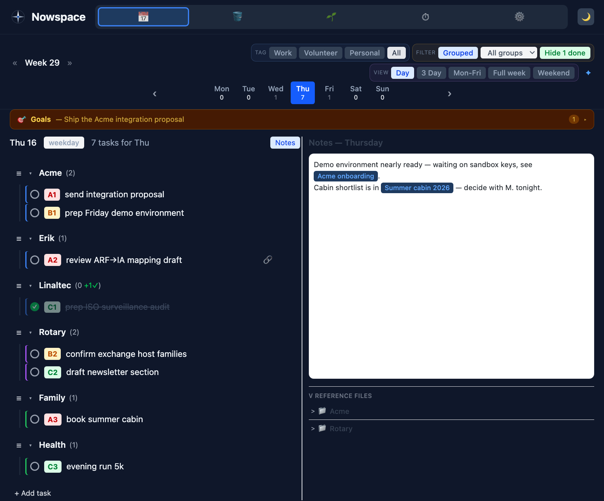

A calm, sovereign space for now
Nowspace plans your day and week directly in plain markdown — the same Obsidian vault you already keep, on a disk you control. Write it down, let go, and get back to your life; the system will still know everything when you return.
Free and open. macOS · Windows · Linux · Docker. No account. No cloud. No hidden hooks.
It looks like an app. It behaves like your files.
Day, week and weekend views with drag-and-drop planning, gentle A/B/C priorities, focus timers, and context fences that keep work, volunteer and private life from bleeding into each other.

One day, three contexts — with the day's notes right beside the plan. (Staged demo data.)
Five tabs, and your own files underneath.
Nowspace is deliberately small — enough to run a day and a week properly, and nothing that needs managing on top. Every tab is a view onto markdown you already own.
Plan
Day, Mon–Fri, full week and weekend views with drag-and-drop reordering. Gentle A/B/C/D priorities instead of dates. Tasks group by project or client, and unfinished work carries forward without ceremony.
Bucket
Everything you're not doing this week, parked quietly. Pull items into a day when you want them. Nothing in the bucket nags, expires, or turns red.
Notes
A scratchpad with wiki-links sitting beside the plan, plus a reference browser onto vault folders you nominate. The day's thinking lives next to the day's tasks.
Habits
A quiet strip for body, mind, soul and sleep. Reminders rather than chores — a nudge to give good habits a chance, with no streak to break and no guilt when you miss one.
Time
One timer, no more. Track what you actually spent on a client or project, logged to monthly markdown files you can read, correct and invoice from yourself.
Your Obsidian vault
Not a tab — the floor everything stands on. Nowspace reads and writes ordinary markdown in your Obsidian vault: a task is a - [ ] line, a plan is a file. Edit it in Obsidian, in vim, on your phone; Nowspace picks the change up either way.
Plus Settings — which is mostly just the path to your vault.
A day in Nowspace
- Something occurs to you. Type it and move on — no fields, no category, no questions. Capture is never gated, because the moment it is, your mind stops handing things over.
- You pick the one thing. The trumpet marks your focus and offers a 15 or 30 minute pomodoro. Ultra-focus draws the curtains on everything else.
- Something looks too big. The elephant breaks it into baby steps. The first step is usually laughably small — that's the point.
- Something is blocked. The hourglass says you're waiting on someone else, so it stops reading as your failure to act.
- The day ends. Nothing chases you. Unfinished work waits for the weekly review, where you have context and can actually decide.
Guilt is not a scheduling mechanism. The weekly review is the notification — a ritual you own, not a timer someone else set.
Your plan is a file. Your files are yours.
Everything Nowspace knows lives in plain, readable markdown in your own Obsidian vault. This was a founding motivation, not an afterthought: a second brain you don't own is someone else's brain.
- Runs on your computer. You control access — nothing leaves your machine unless you explicitly ask it to.
- No accounts, no cloud, no lock-in. Open the folder in any editor and it's all just there. Stop using Nowspace tomorrow and you lose nothing.
- No hidden hooks. No telemetry, no analytics, no phoning home. The code is open — read it, build it yourself, verify it.
- No database. The plan you see in the app is the markdown file on disk. Two views of one life.
{kind=link}
What you see in Nowspace.
{kind=link}
The same day, opened as 0-Inbox/Plan Week.md. A task is one - [ ] line. That file is the plan — Nowspace stores nothing of its own.
So that now can be calm
Nowspace exists so whatever is on your mind has a place to live that isn't your head. Capture a thought in seconds, trust that it's recorded, and return to your life. Once your mind believes the system, it stops rehearsing the list at night.
Focus, one thing at a time
The focus horn and pomodoro timer pick the one thing. Ultra-focus draws the curtains on everything else — what you can't see can't tempt you.
Big things shrink when split
The white elephant breaks a task that feels too tough into baby steps. The first step is usually laughably small. That's the point.
Horizons, not deadlines
No dates on tasks. Dates manufacture stress and expire into guilt. Tasks live on gentle horizons — this week, next week, someday — with simple A/B/C priorities.
Contexts and fences
Separate work, volunteer and private life. During work hours, show only work — and pin the rare private thing that genuinely must happen, as a deliberate exception.
A calm surface for the age of agents
Running AI agents means juggling parallel threads of work that all need review, notes, and clean handover. Because Nowspace's substrate is plain markdown, anything that can read a file can read your plan — including your agents. Their output lands as linked notes for review; your handover notes are files anyone (human or agent) can pick up.
Built in the open, shared for free
Nowspace is developed in the open on GitHub. The tool is free to use — this is a .org, not a storefront. Found a bug, have an idea, or want to improve it? The repository is where it all happens.
Get the latest release
Desktop apps for macOS, Windows and Linux, or run it with Docker. Download page →
Improve it
Issues, suggestions and pull requests are welcome at github.com/JanLin/nowspace — read when time allows, with no promise to respond or merge.
Verify it
Sovereignty you can audit: read the source, build from source, and confirm for yourself there are no hidden hooks.
Backed by Linaltec AB
Nowspace is developed with the support of Linaltec AB, and the connection isn't incidental. Linaltec's work sits at the seam between autonomous systems and the people accountable for them — and Nowspace is that same problem at desk scale.
An agent can work all night. A person still has to decide, in the morning, what actually mattered — and be able to explain it to a colleague, a client, or themselves next quarter. That handover needs somewhere durable to live, in a format no vendor controls.
Sponsorship covers development time. It buys no influence over your data: there is still no account, no cloud, and nothing leaving your machine.
Give your mind somewhere to put things down
Free, open, and yours. Install it in minutes and point it at your vault.
Download Nowspace